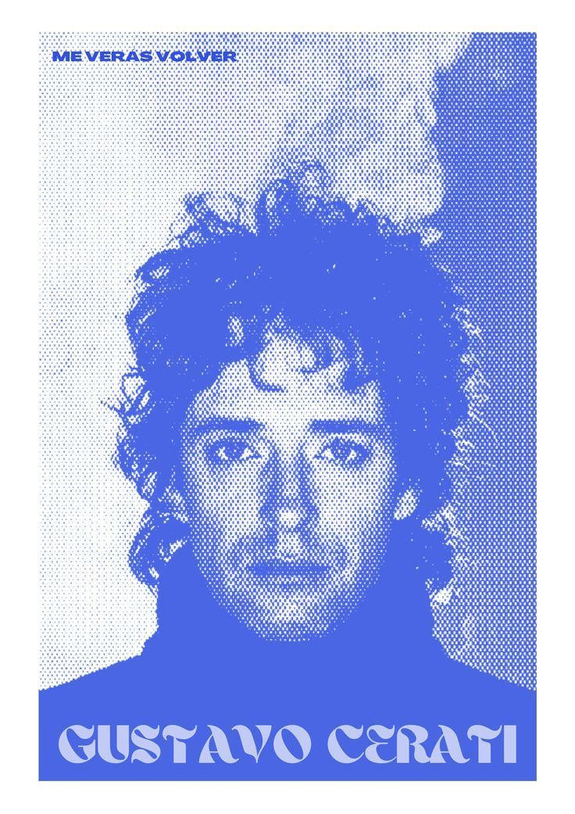

Lo que dejó su música en Latinoamérica.
Con Soda Stereo, Cerati demostró que una banda de rock en español podía llenar estadios en toda Latinoamérica. Antes de ellos eso parecía imposible.
Como solista se atrevió a cambiar en cada disco: electrónica, orquesta, rock y folk. Por eso muchos músicos lo ven como alguien que enseñó que se puede experimentar sin perder la identidad.
Hoy sus canciones siguen en la radio, en homenajes y en las playlists de personas que nunca lo vieron en vivo. Su música sigue siendo una frecuencia que no se apaga.

«Gracias totales.» Gustavo Cerati, último concierto de Soda Stereo, River Plate, 1997.
«Siempre es hoy es un concepto que […] vengo usando desde hace tiempo.» Gustavo Cerati, entrevista con el diario La Nación, 2002.
«Si me retirara ahora […] me iría contento por Fuerza Natural.» Gustavo Cerati, 2009. Citado por el diario Conclusión.